.
. 1. Відкрийте звіт Продажі. Для цього виберіть пункт меню Звіти - Продажі - Аналіз продажів - Продажі.
2. Налаштуйте звіт за кнопкою Настройка. Відкриється форма настройки звіту.
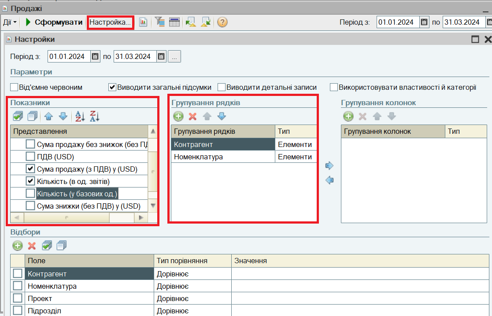
Період звіта можна вибрати за кнопкою .
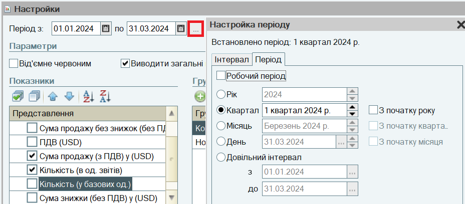
Параметри звіту впливають на його оформлення. Настройка параметрів виконується встановленням прапорів для відповідних параметрів.
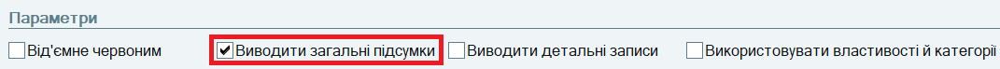
Вибір Показників, що виводяться, також виконується встановленням прапорів. Порядок виведення показників у звіті налаштовується за кнопками та .
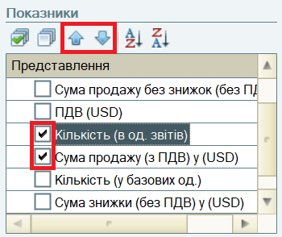
Склад Групувань заповнюється в таблицях:
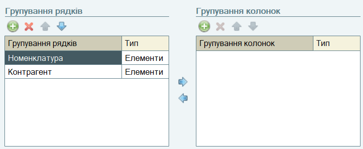
У звіт можна додавати групування, які виводяться в рядках звіту або в його колонках. Порядок вкладеності групувань визначається їх позицією в таблиці групувань. Додавання нового групування здійснюється за кнопкою  на командній панелі таблиці групувань. При цьому відкривається форма вибору полів групувань.
на командній панелі таблиці групувань. При цьому відкривається форма вибору полів групувань.
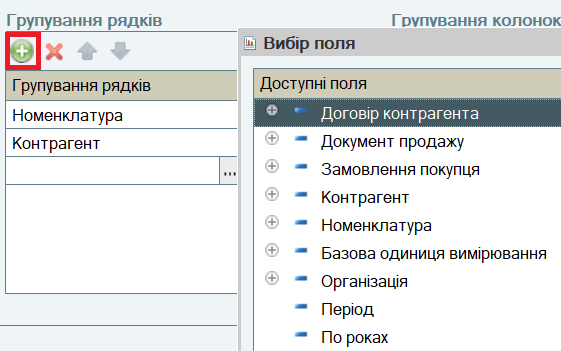
Встановлення Відборів здійснюється в таблиці Відбори встановленням прапора у рядку. Обирається Тип порівняння.
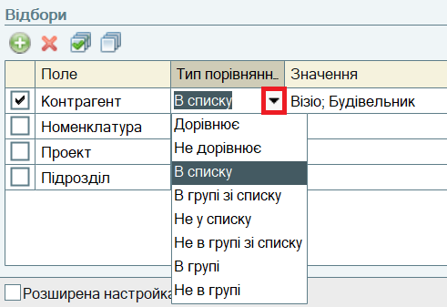
Значення відбору встановлюються за кнопкою
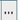
. Для Типу порівняння В списку список значень задається в спеціальній формі, де здійснюється підбір елементів списку за кнопкою Підбір:
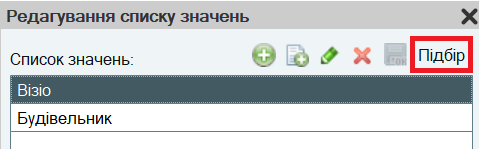
3. Натисніть кнопку Сформувати. Звіт буде сформовано.
Подвійним клацанням по показнику можна налаштувати розшифровку звіту:
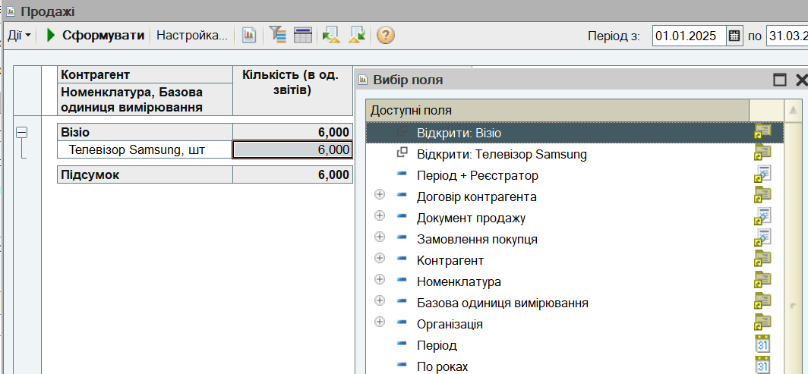
Настройки звіту можна зберегти за кнопкою
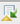
. Відкриється форма Збереження настройки. Настройку можна зберегти, призначити користувачам, а також визначити, чи буде настройка застосовуватися автоматично при відкритті звіту (Відкривати), чи будуть подальші зміни настройки зберігатися автоматично (Зберігати).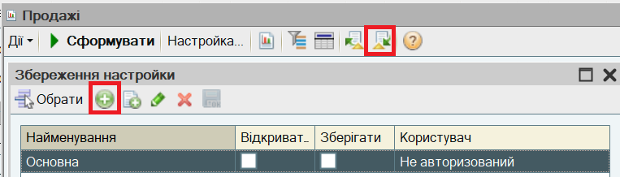
Це заключний розділ посібника.